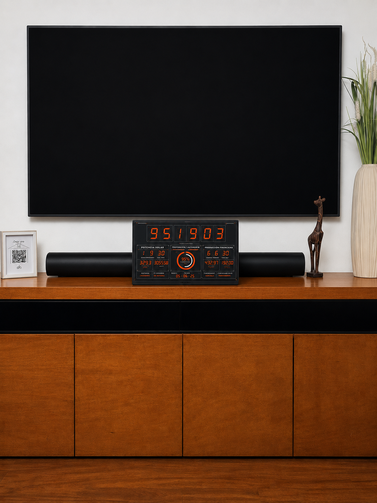

La auditabilidad del dinero
No confíe, verifique
Piense en todo lo que usted da por sentado cada vez que usa dinero. Da por sentado que hay la cantidad que dicen que hay. Que el banco donde guarda sus ahorros tiene de verdad lo que figura en su cuenta. Que no se está creando dinero a escondidas mientras usted duerme. Que las cifras oficiales son ciertas. Nada de eso lo ha comprobado usted; lo confía. Confía en que quien emite el dinero dice la verdad sobre cuánto hay —y no tiene, en realidad, ninguna manera de verificarlo—.
Esa palabra —verificar— es el corazón de este capítulo, y de toda una manera distinta de pensar el dinero. Porque hay un abismo entre confiar y verificar. Confiar es creer en la palabra de otro. Verificar es comprobarlo uno mismo, sin necesidad de creerle a nadie. Y resulta que casi todo el dinero que la humanidad ha usado descansa sobre lo primero: sobre la confianza en que quien lo controla no nos está engañando con la cantidad. Este capítulo trata de esa diferencia —y de por qué es, quizá, la más importante de todo el libro—.
Y aquí debo decirle por qué esta pieza no es una más, sino distinta de todas las anteriores. A lo largo de este bloque hemos visto al dinero lanzar señales —la tasa de interés, los precios relativos, el poder de compra, el crédito— y hemos visto cómo cada una puede decir la verdad o mentir. Pero todas esas señales comparten un cimiento: descansan sobre una cantidad de dinero. La tasa significa algo porque hay tanto dinero; los precios dicen la verdad si la cantidad no se está inflando a escondidas; el ahorro conserva su valor si nadie crea unidades nuevas en secreto. Quite ese cimiento —permita que la cantidad se falsifique sin que nadie lo note— y todas las señales se corrompen a la vez, sin que usted tenga modo de saberlo.
Por eso la auditabilidad —la posibilidad de verificar que la base no está adulterada— no es una pieza más en la fila. Es la condición que garantiza a las otras siete. De nada sirve que la tasa sea honesta, que los precios no mientan, que el ahorro se conserve, si usted no puede comprobar que, por debajo de todo eso, no le están falsificando el dinero. Es la pieza que cierra el sistema: la que permite confiar en todas las demás sin tener que confiar en nadie. La meta-señal —la que dice si las señales mismas son reales—.
Veamos entonces qué pasa cuando esa verificación no es posible —que es la situación normal, la del dinero que usamos—. Volvamos a algo que vimos al comienzo del libro: el banco que emite más recibos de los que puede respaldar. Recuerde la mecánica: por cada cantidad de oro que de verdad guarda, imprime y presta varios recibos más, como si todos estuvieran cubiertos. Lo decisivo, para este capítulo, no es el fraude en sí —ya lo conocemos—, sino algo más sutil: que no se puede detectar. Rothbard lo señaló con precisión:
"Los pseudo-recibos serán intercambiados en el mercado sobre la misma base que los verdaderos, ya que nada indica que no sean legítimos."
Rothbard, El hombre, la economía y el Estado, cap. 11
"Nada indica que no sean legítimos." Ahí está el problema entero. El recibo falso y el verdadero son indistinguibles —circulan iguales, se ven iguales, valen igual—, hasta el día en que todo se viene abajo. Y eso es lo más perverso: el fraude existe desde el primer momento en que se emite el recibo de más, pero permanece invisible mientras la gente confíe. Rothbard lo lleva a su conclusión exacta:
"Solo se puede saber qué recibos en concreto son fraudulentos después de que un pánico bancario haya tenido lugar... y los de los últimos reclamantes se queden impagados."
Rothbard, ¿Qué ha hecho el gobierno de nuestro dinero?
Lea bien lo que eso significa: la falsificación solo se descubre cuando ya es tarde, cuando el sistema colapsa y alguien se queda sin lo suyo. Mientras tanto, todos creyeron que su dinero estaba ahí —y todos estaban equivocados, sin manera de saberlo—. Un dinero que no se puede auditar es un dinero que puede estar falsificado en este mismo instante, bajo sus pies, sin que usted, ni nadie, pueda comprobarlo hasta que sea demasiado tarde. La opacidad no es un defecto accesorio del fraude: es lo que lo hace posible y lo que lo sostiene.
Pongamos ahora a los tres dineros frente a esta pregunta —¿se puede verificar?—, porque aquí, más que en ninguna otra pieza, se separan.
El dinero fiat es el peor de los tres, y por partida doble. Su cantidad la controla quien lo emite, y la información sobre cuánto se crea viene del mismo que lo crea: usted confía en las cifras del banco central porque no tiene otra cosa. Y por debajo, la creación que de verdad importa —la de los bancos comerciales fabricando dinero al prestar, que vimos en el capítulo anterior— ocurre de un modo tan difuso que ni siquiera ellos podrían decirle, en tiempo real, cuánto dinero existe en total. No es que las cifras estén ocultas en una caja fuerte: es que la cantidad real es, en buena medida, incomprobable. Confiar es la única opción.
El oro es mucho mejor —su cantidad no la infla nadie por decreto, y un lingote se puede pesar y morder—. Pero a escala de sistema arrastra una opacidad vieja: usted puede verificar el oro que tiene en la mano, pero no el que el banco dice tener en la bóveda. Y es justo en esa rendija —entre el oro que se promete y el que de verdad está— donde anida el fraude de los recibos sin respaldo que acabamos de ver. El oro es honesto en su naturaleza, pero su custodia obliga, otra vez, a confiar: a creer que la bóveda contiene lo que el papel afirma. Nadie, desde su casa, puede contar todo el oro que respalda los billetes que usa.
Y entonces aparece Bitcoin, que hace algo que ningún dinero anterior pudo hacer: vuelve la verificación posible para cualquiera, sin pedirle permiso a nadie. Cuántos bitcoins existen, cuántos existirán, si alguien creó uno de más —todo está escrito en un libro contable público que cualquier persona, desde su casa, puede revisar entero y comprobar por sí misma—. No hay una bóveda cerrada en la que haya que confiar; no hay cifras oficiales que haya que creer; no hay creación oculta posible, porque cada unidad que existe está a la vista de todos y es validada por miles de participantes que no se conocen ni necesitan confiar entre sí. Por primera vez en la historia del dinero, no hay que creerle al emisor: se verifica.
De ahí la frase que resume toda esta manera de pensar, y que conviene entender en su sentido más hondo: no confíe, verifique. No es un eslogan sobre tecnología. Es la afirmación de que, por primera vez, una sociedad puede comprobar —sin pedirle permiso a ningún banco, ningún gobierno, ningún comité— que su dinero no está siendo falsificado. Y aquí se cierra el círculo de todo el bloque: si usted puede verificar que la cantidad de dinero es exactamente la que debe ser, entonces puede confiar en que la tasa, los precios, el ahorro, el crédito —todas las señales que se apoyan sobre esa cantidad— descansan sobre algo real, y no sobre un engaño oculto en la base. La auditabilidad no protege una señal: las protege todas. Es la que convierte la honestidad del dinero en algo que ya no hay que creer, sino que se puede comprobar.
Aquí termina nuestro recorrido por las siete piezas, y la que las sostiene. Las hemos visto una por una —la tasa, la estructura productiva, la detección de errores, los precios relativos, la predecibilidad, el poder de compra, el reparto del crédito, y la verificación de la base—, y en todas encontramos la misma forma: un dinero honesto deja que la señal diga la verdad; un dinero que se crea de la nada la falsifica. Hasta ahora hemos trabajado con cuidado, casi en el laboratorio, mostrando el mecanismo de cada distorsión por separado. Pero estas distorsiones no viven en un laboratorio: viven en el mundo, todas a la vez, y producen consecuencias que usted reconoce porque las ha visto en las noticias, en su ciudad, en su propia vida. Bosques que caen, comida que empeora, guerras que no se podrían pagar de otro modo, crisis que se repiten. A eso —a lo que todas estas falsificaciones, sumadas, le hacen al mundo real— dedicaremos lo que viene.
Pero antes de salir de aquí, llévese una sola imagen, porque resume todo lo que hemos construido. Hay un número en el corazón de esta historia: veintiún millones. Esa cifra fija, conocida, imposible de alterar, no es un detalle técnico: es la raíz de la que cuelga todo lo demás. Piénselo como un árbol. La tasa solo dice la verdad si la cantidad es firme; los precios solo informan si nadie los infla por debajo; el ahorro solo se conserva si no se diluye; el crédito solo fluye al mérito si no hay dinero fabricado que repartir; ninguna señal se sostiene si la base se puede falsificar. Las siete piezas de este bloque entero, y la que las sostiene —cada rama, cada hoja— descansan, en última instancia, sobre una sola pregunta: ¿cuántas unidades hay, y puede alguien crear más? Si esa raíz es firme y verificable, todo el árbol vive. Si esa raíz se puede falsificar, todo el árbol está podrido, por sanas que parezcan las ramas. Los veintiún millones son la señal de las señales: el dato del que depende que todos los demás datos sean ciertos.

Y lo más extraordinario es que esa raíz, por primera vez en la historia del dinero, se puede vigilar. En mi sala de estar tengo un pequeño reloj conectado a mi propio nodo —una computadora modesta que guarda y verifica, bloque a bloque, la contabilidad entera de Bitcoin—. Cada diez minutos, más o menos, marca un número nuevo: la altura del bloque, los bitcoins ya emitidos, los que faltan por emitir, el porcentaje del total que ya existe. No le creo a nadie esa cifra: la compruebo yo, en mi casa, con mi máquina, sin pedirle permiso a ningún banco ni a ningún gobierno. Ahí está, encendido en la pared, la prueba viva de que el árbol entero está en pie —de que la raíz no ha sido tocada, de que los veintiún millones de unidades siguen siendo veintiún millones—. Eso, que parece tan pequeño, es algo que ninguna generación anterior pudo tener: un dinero cuya honestidad no hay que creer, porque se puede mirar. No confíe. Verifique. Y duerma tranquilo, porque el número no miente, y usted mismo puede comprobarlo.